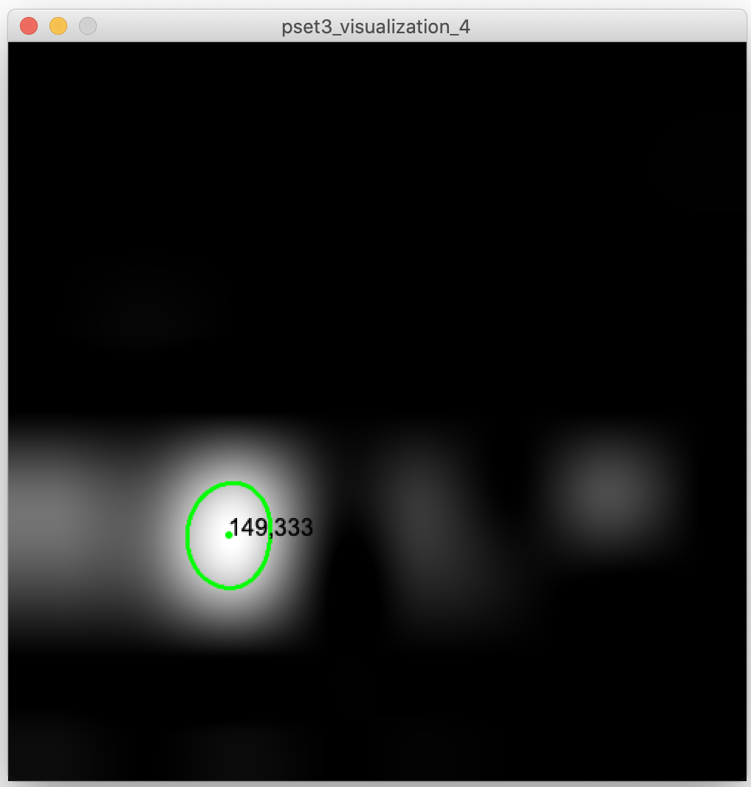
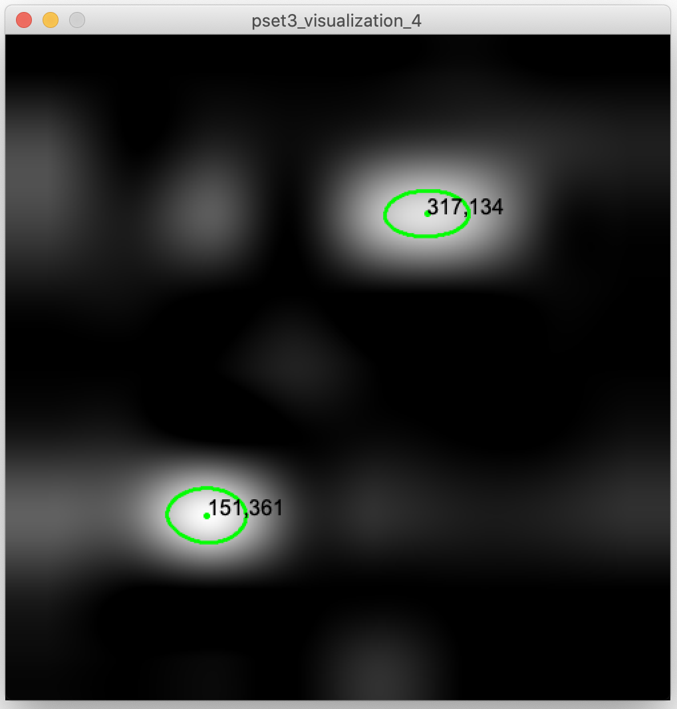

6.810 Engineering Interactive Technologies (fall 2020)
Problem Set Series: Multi-Touch Pad
Problem Set 3 (due Friday, Oct. 23, 2020, 11.59pm)
Now that you have the hardware ready and Arduino sensing code prepared, you will write the Processing code that visualizes the sensor signals and extracts the touch point coordinates. To accomplish this, you will do the following five steps:- Read the multi-touch sensing data into Processing via the Serial Port.
- Clean the sensing data from noise by determining the noise baseline and subtracting it from the received signals.
- Convert the received signals into grayscale values that can be displayed as pixels in a 9x8 pixel image.
- Scale the image to 500x500px using bicubic interpolation to facilitate touch point extraction.
- Implement blob detection to extract the touch point locations.
Skeleton Code
Start by downloading the skeleton code for the PSet3 from here.Before you can execute it, you first have to install two libraries (see next step).
Install external libraries
For this PSet, we will be using two Processing libraries:- OpenCV (a library that helps with image processing, in our case we will draw our touch signals into an image, see picture at start of pset3)
- BlobDetection (a library that helps to find blobs inside of images, in our case the blobs are the touch points on the multi-touch pad)
Sketch/Import Library/Add Library and searching for their name.

(1) Read the Multi-Touch Sensing Data into Processing
Refresher from PSet2
In pset2, you already wrote the Arduino code that reads the receiver pins from the multi-touch pad and writes the resulting data onto the serial port in the following way:
0,50,83,58,79,108,75,82,54 //columm0, row0val, row1val, row2val 1,55,92,120,84,63,61,88,53 //columm1, row0val, row1val, row2val 2,61,64,73,66,92,78,67,57 3,65,117,116,84,48,81,91,71 4,65,128,116,54,76,81,88,59 5,61,86,66,54,114,78,64,64 6,59,86,120,83,85,75,93,63 7,56,86,116,70,72,83,80,64 8,23,82,74,68,98,64,62,52 ...
Read Data from Serial Port Into Processing
Next, you need to read this data from the serial port into Processing.
We have already shown you how to read data from the serial port into Processing in Lab 1 & 2 and you can check your prior code from back then to see how to do it.
In the skeleton code, put your code for reading the data into the readSerial() function:

Save Data for One Complete Scanning Pass into a 2D Array
The data for a single pass on all columns and rows should be saved into a 2D array.
When considering the size of your 2D array, remember that we build a 9x8 multi-touch pad.
Printing the 2D array to the Processing command line should look something like this:

Every time a new pass over all columns/rows starts, you need to override your array values.
(2) Cleaning the Received Signal by Reducing Noise
What is noise?
As you may have noticed, even when you are not touching the multi-touch pad, the receiver pins almost always receive some value although you would expect that they should receive '0'.
This is what we call "noise" in signal processing.
What causes noise?
Noise can be caused by a variety of factors.
On the entire multi-touch pad, noise can be caused by the substrate the multi-touch pad is placed on, i.e. depending on if you place it on a glass table or a wooden table the noise level will be different.
Additionally, noise can be different at each of the connection points in the circuit. For instance, each FPC connector and each wire may have different noise levels since the conductive lines all make slightly different levels of contact.
Furthermore, since the inkjet printed circuit may not be perfectly consistent everywhere either because of uneven printing or because of different aging levels over time, the different printed paths may also have different levels of noise.
Finally, in addition to the reasons above, we can also have different noise levels on a single row of electrodes because the distance between the receiver pin and each electrode in the row is different, thus the electodes further away accumulate noise over a larger distance.
All of these factors together result in different noise levels at each point in your multi-touch pad.
Why is noise an issue?
Noise is an issue because it can lead to false positives, i.e. your code may think the multi-touch pad was touched although no interaction occured.
To prevent this, we need to eliminate the noise in our signal.
How can we eliminate the noise?
In order to eliminate the noise and have more "clean" data, there are many different processing steps that one can take.
In our case, we will implement a simple noise baseline filter.
How does a noise baseline filter work?
A noise baseline filter works in two steps:
(1) Record Noise Baseline Signal: First, you need to record the signal when you are not touching the multi-touch pad. The signal is recorded over some period of time and the recorded values are then averaged and saved as the noise baseline value. You only have to do this once at the beginning (and please only do it once). In our case, we found that recording 2 seconds of non-touch sensing data is sufficient for the multi-touch noise reduction. Note that we record the noise baseline for every position in our multi-touch pad for the reasons mentioned above, i.e. that every position has its own level of noise. We therefore record the noise baseline for every received value and thus we are having 9x8 = 72 noiseline base values in total.
Implement the noise baseline filtering in the setBaseLine() function and change the boolean baseLineSet in the skeleton code to "true" once the baseline is set.
You will find the Java's native System.nanoTime() or Processing's millis() funtion to be helpful. For more details, you can look at the reference here .

(2) Subtract Noise Baseline from Usage Signal: After you stored the noise baseline for each value, we can look into how to use it to create better signals during the actual user interaction. During interaction, the signal for each value is again recorded but this time you subtract the previously recorded noise baseline value from each new incoming signal value. Thus, if you don't touch the multi-touch pad, the noisy incoming signal minus the noise baseline will equal 0 (or at least be close to it). Therefore, the chance of false positives is much smaller, i.e. the chance that your code thinks that a touch occured although there was none is greatly reduced.
Implement the noise baseline substraction in the subtractBaseLine() function and subtract the baseline values from corresponding new incoming raw values only when the baseline is set.
You should also make sure the "clean" sensing values stored after the subtraction are not negative.
(3) Converting the Received Signals into Grayscale Values that can be Displayed as an Image
Now that we have "clean" sensing values, our next step is to find out where the multi-touch pad was actually touched.Using Image Processing for Detecting Touch Points
While there are multiple different ways to find our where the multi-touch pad was touched, we will use an approach based on image-processing.
First, we will convert our sensor signals into grayscale values and then draw the grayscale values into a 9x8 pixel image.
Brighter pixels will correspond to higher sensor signals (i.e. touch points) while darker pixels will correspond to areas that were not touched.
Since image processing on such a small 9x8 pixel image is too difficult, we will increase the size of the image to 500x500px using bicubic interpolation to fill in for the missing pixel values.
After this, we can use 'blob' detection to extract the white blobs in the image (i.e. the touch points) and get the touch coordinates from the blobs.
Let's do this one step at a time.
Creating the Image
For our visualization, we will construct an image (PImage) the same size as our 2D array that contains the sensing data.
Note that this PImage will be tiny (9x8 pixel) and you will likely have to search a bit for it on screen if you decide to display it for debugging purposes.
Creating a Grayscale Image
The PImage will be gray-scale since for our purposes we are only interested in brighter vs. darker spots for the purpose of touch detection.
If you set a PImage's pixels to a color value from 0 (black) - 255 (white), it will automatically be treated as grayscale.
Converting the Sensor Signals into Grayscale Values
Before we can draw our sensor signals into the PImage as grayscale values, we have to make sure they have the correct range, i.e. are between 0-255.
We therefore have to scale our sensor signals accordingly.
To scale your sensor values to a range of 0 - 255, you can use the map() function in Processing.
As you can see in the map() function reference, apart from the incoming value to be converted, we also have to set four "scaling" values:

start2/stop2 (target): The last two parameters, i.e. our target range, are pretty straight forward since we already discussed we want to scale to 0 - 255.
start1/stop1 (source): For the source parameters, use the middle-to-low end sensor reading when you are not touching for start1, and middle-to-high sensor reading when you are touching for stop1. You can think of these 2 parameters as "min-input-range" and "max-input-range" of your incoming sensing data. We will revisit this later and it will become more clear why that is a good strategy.
After you scaled your sensor values, use them to set the pixel color of each pixel in the 9x8 pixel PImage.
Put your code into the setColors() function in the skeleton code:

(4) Scaling up the Generated Image Using Bicubic Interpolation
Why do we need to scale our image?While the tiny 9x8 pixel PImage that we just created is accurately representing our sensor values, it is not exactly the best image for visualization, nor it is a good representation of the physical size of our multi-touch pad.
We therefore have to scale up the image to a size that is more suitable for further image processing, such as blob detection.
In our case, we want to scale up the image to 500px x 500px.
Since our original tiny 9x8 pixel image only contains 9x8 values, we need to figure out what values we should use for all the newly generated 'gaps' in the 500x500px image since it needs 500x500 values to be completely filled in at each pixel.
To do this, we use a technique called interpolation.
What is interpolation?
Interpolation can help fill in values where no actual values are present and can thus help us determine what value the 'in-between' pixels in our 500x500px image should have.
There are many different interpolation techniques that can be used to interpolate the pixel values to create a smooth scaled up appearance of the original input image.
Some of simplest interpolation methods are bi-linear and bi-cubic interpolation.
What is the difference between bi-linear and bi-cubic interpolation?
Bi-linear interpolation: considers the closest 2x2 neighborhood of known pixel values surrounding the unknown pixel. It then takes a weighted (by distance) average of these 4 pixels to arrive at its final interpolated value.
Bi-cubic interpolation: is considering the closest 4x4 neighborhood of known pixels — for a total of 16 pixels. Since these are at various distances from the unknown pixel, closer pixels are given a higher weighting in the calculation. Bicubic produces noticeably smoother images than the bi-linear interpolation.
Thus, a benefit of bicubic interpolation is that it gives you a smoother interpolation result since it considers more values than bilinear interpolation. However, this also comes at the drawback of needing higher computational power since more values need to be processed to generate the interpolated value. For our small multi-touch pad with only a few hundred interpolated values this is not an issue but if you had to do more interpolation it may slow the processing down and the multi-touch pad detection would start lagging behind the user's finger movements.
You can see the difference of bi-liner vs. bi-cubic interpolation in the images below (these are from our multi-touch pad with roughly the same location touched by finger, Left: Bilinear vs. Right: Bicubic) .
For a more close look, below are the resulting interpolated images from a 5x5 input data via bi-linear and bi-cubic.
Implementing Bi-Cubic Interpolation with OpenCV
Luckily, you do not have to implement the bicubic interpolation from scratch.
There is an image processing and computer vision library called OpenCV.
OpenCV exists as a library for many different programming languages, in our case we will use OpenCV's implementation for Java and Processing.
Remember, at the beginning of pset3, you already installed the OpenCV library.
If you scroll up in your skeleton code, you can see that we already imported several classes of the library with
import gab.opencv.*; import org.opencv.imgproc.Imgproc; import org.opencv.core.Mat; import org.opencv.core.Size;
If you look at the documentation of the Imgproc class, you will see that it provides a resize() function, which also allows us to specify which interpolation method we want to use.

So let's see how we can fill out the parameters.
Mat src: This is the input image (9x8px) that we want to resize. As you can see, the image here is in the format Mat (Matrix) and not PImage. We therefore first have to convert our PImage into a Mat. In image processing, images are handles as 2D matrices, where every matrix entry is the color value of one pixel (i.e. 0-255 in our case). You can also think of the 2D matrix as a 2D array with pixel values in rows and columns.
Before we can convert our PImage into a Mat, we first have to construct a new OpenCV object.
For this, you need to call the corresponding OpenCV constructor in the OpenCV class documentation.
Once you constructed your OpenCV object, you can call the getGray() function on it to retrieve the image as a Mat (check the OpenCV class documentation again). This is your src input parameter for interpolation.
Mat dest: This is the output image, i.e. the resized 500x500px image. Again it needs to be in the format of a matrix. For the output image, we want to create a new empty matrix of our desired size. You can find the OpenCV Mat Reference here.
Similar to how other variables have a type, e.g. int or float, matrices also have types, which describe what types of values can be stored in them. Since we want to make sure the input and the output images match, you need to reference the image type of your source matrix as the type argument. If you check the Mat reference again, you can see that there is an instance function for getting the matrix type.
Size dsize: You can find the OpenCV Size Reference here. Construct a new Size object with 500x500px.
double fx, double fy: These are scale factors but since we don't want to scale our image any further, we set these to 0.
int interpolation: These are the different interpolation options. If you look at the different fields in the OpenCV Imgproc Reference, you will see that there are several options, such as:

We want to use the inter-cubic option as our last parameter.
Implement this part in the interpolate() function in the skeleton code:
Convert Matrix back to PImage: Finally, after you resized the image with our desired interpolation method, you have to convert your output matrix back into a PImage. For this, you can go back to the OpenCV class documentation and look for the method that gives you a PImage.
This should also still go into the interpolate function in the skeleton code.
Checking Your Results:
Once you finished the interpolation, you should be able to see images like the ones below. The image should be darker when the multi-touch pad is not touched and have some bright spots when the multi-touch pad is touched. What exactly you see depends on your specific noise level and how well your noise baseline works.
Not Touched:

Touched:
left: 1 finger touching, right: 2 fingers touching
Improving your Results
If your results don't look as good as above, try changing how you map your sensors signals to the grayscale values of 0 - 255.
Remember, when you mapped your sensor signals to the 0 - 255 range, we had recommended that you use the middle-to-low sensor reading when not touching to map to 0 (black), and the middle-to-high sensor reading when touching to 255 (white).
Let's assume for a moment your middle-to-high sensor reading when touching was 1500 and you mapped it to 255 (white). As a result, any sensor reading above 1500 is now leading to white pixels, whereas anything below will lead to darker pixels. If you find that you only see dark areas in your image and nothing is white (or not "white" enough) when touched, then perhaps the 1500 threshold is too high. Consider using a lower value to increase what signal values are being treated as 'touched' white pixels.
Similarly, if you see too much noise in your image, i.e. everything is white (or multiple areas get "too white" when only touching with one finger), perhaps your non-touch sensor reading value is too low and you should set it to something higher, so that more signal values are treated as black non-touch pixels.
Note that you may have to slightly adjust these values when you change the setup in which you use your multi-touch pad. For instance, if place your multi-touch pad on a different surface (glass vs. wooden table) or if anything else in your environment undergoes a significant change (e.g. increase in humidity), the sensor values and the noise level may change. We therefore recommend you find yourself a place where you do the calibration once and then try to not change it too much.
(5) Implement blob detection
While you can now determine with your eyes where the multi-touch pad was touched, we also want to teach our program to do this automatically and tell us at which (x,y) coordinate it sees a touch point.To do this, we need to write code that detects the white 'blobs' in the image.
This is called 'blob detection'.
Library for Blob Detection
Lucky for us, somebody else has already provided a library for blob detection.
You already installed that library at the beginning of this pset and we already imported it into the skeleton code using the following line:
import blobDetection.*;
You can see the BlobDetection Reference here for details on the different functions.
Let's briefly review how blob detection works.
Blob Detection works on Black/White Images:
Blob detection (also called 'Connected Components' search) works on black and white images.
Thus, a first step before blob detection can actually be performed is to convert our grayscale image into a black and white image.
To do this, the algorithm needs as input a 'threshold', i.e. a number that defines which grayscale values will be set to white and which will be set to black.
You can see an example of thresholding below: all the dark gray values (e.g., all pixels below a grayscale value of 100) were set to black and all the brighter gray values (e.g., all pixels above a gray scale value of 100) were set to white.
Our library does the thresholding automatically when we call its computeBlobs() function (we will do this in a minute, keep reading). However, if your blob detection is not finding all the blobs in your image, consider using the setThreshold() function to determine which grayscale level from 0-255 will be used to determine which pixels will become white and thus potential blobs and which pixels will be set to black. Note that the threshold takes as input a float value from 0-1 so you need to scale your values accordingly.
Blob Detection Looks for 'Connected Components'
Once the image is converted into black/white, the blob detection starts to look for areas that form larger blobs.
The outcome of blob detection looks something like the image below.
Every white area ('blob') has a label, e.g. 1, 2, 3. You can see that there are 'original labels' (big numbers) and 'parent labels' (tiny blue numbers in the upper right corners).
If you consider the parent labels for those pixels that have them, you can see that each 'blob' has the same overall label, e.g. there is one blob with label '1' and one blob with label '3'.
So let's see how we get there from an unlabeled black/white image.
First, we start by going over each pixel.
We start with the top left corner pixel and check if the pixel is white.
If it is not white like in our case, we continue searching through the row before moving onto the next row.
In row 2, pixel 3 we finally find a white pixel.
Once we found a white pixel, we need to check if any of its neighbor pixels are white and if yes, if they already have a label.
In our case, none of the neighbor pixels has a label yet, so we give our selected pixel a new label. We use the label '1' since this is the first label we are creating. In addition, since there is no neighbor pixel with a lower label count, we also set the parent label (tiny blue number) to '1'. Note that when the parent is equal to the original label, we don't show it in the images further down.
We then check the next pixel. This time the pixel has a white neighbor pixel that already has a label (i.e. the one we just labeled).
We therefore set it to the same label '1' and also set its parent label to '1' since there is no neighbor with a lower label number.
The next pixel does not have a white neighbor pixel with a label.
We therefore increase the label count to '2'.
In addition, since there is no lower label in the neighborhood we set the parent to '2' as well.
Let's fast forward a bit and look at a pixel that has several white neighbors with different labels.
You can see below this happens in row 3.
To resolve this, we need to check all the different labels (i.e. we find '1' and '2') and choose the smallest available label (i.e. '1') as the label for the pixel.
In addition, we update the 'parent label' of all the neighbors to be the smallest available label. As you can see, the neighbor with the label '2' now has a parent label '1' in the top right corner.
If you repeat this process for every pixel in the image a few more times, you end up with the image we showed you at the beginning and which is shown below again for your reference.
Note that the bottom area (row 8) where the main label is 6 and the parent label is 3 required several passes over all pixels to propagate the '3' parent label from the pixels further on the right.
Once there are no more changes in labels, you can be sure that all pixels that have the same label belong to one 'blob', i.e. 'connected component'.
Implementating Blob Detection: Finding Blobs in the Image
Lucky for us, somebody else has already provided a library with the blob detection algorithm.
The library automatically converts your grayscale image into black and white, performs blob detection, and then returns you the number of blobs, their locations in the image, as well as their outlines.
You can find the BlobDetection Reference here for details on the different functions.
First, construct a new object of the BlobDetection class using our interpolated PImage height and width.
You can then use the computeBlobs() function to detect the blobs.
Finally, the getBlob() and getBlobNb() functions can help you to retrieve the blobs.
If your blob detection is not finding all the blobs in your image, consider using the setThreshold() function to determine which brightness levels from 0-255 should be taking into account when searching for blobs. Note that the threshold takes as input a float value from 0-1 so you need to scale your values accordingly.
Implement this in the drawBlobsAndEdges() function in the skeleton code (note that we will do the drawing of the blob outline in the next step):

Drawing Blob Centers and Contours Into the Image
Next, we want to extract for each blob:
- the center of the blob (i.e., center of the touch point)
- the contour of blob (i.e., the outline of the touch point)
To extract the touch point and contour, you can go back to the documentation of the BlobDetection library.
The Blob class should give you all you need.
Note that the contour is provided as a list of edges (i.e. lines).
Drawing the contour, touch point, and text coordinates into the image is similar to what you already did in your pset1 Processing application.
Checking your Results
Once you finished this part, you should be seeing something like this depending on if one or multiple fingers are touching:
 
Upload your Processing Code and Pictures of your Visualization
For grading, please upload the following to your google drive student folder:- the .pde file of your Processing program
- 3 photos showing your Processing UI works with one, two, and three fingers touching the multi-touch pad (take the photos so that the multi-touch pad and Processing Window are seen at the same time)
- a short video showing your Processing UI works with one, two, and three fingers touching the multi-touch pad (take the video so that the multi-touch pad and Processing Window are seen at the same time)
Grading
We will give 25 pts in total:- 5 pts: you read the sensing data from the serial port into Processing and saved it correctly into a 2D array.
- 5 pts: you recorded 2 seconds of noise, set the noise baseline correctly based on the recorded noise, and are substracting the noise baseline correctly from the incoming live signal during use
- 5 pts: you created a grayscale image of the correct size and converted the sensor signals into the correct grayscale values using the map function.
- 5 pts: you scaled the image correctly using bicubic interpolation
- 5 pts: you implemented the blob detection and drew the touch center, outline, and coordinate into the visualization. You showed that your touch pad can recognize 1, 2, and 3 fingers touching correctly.